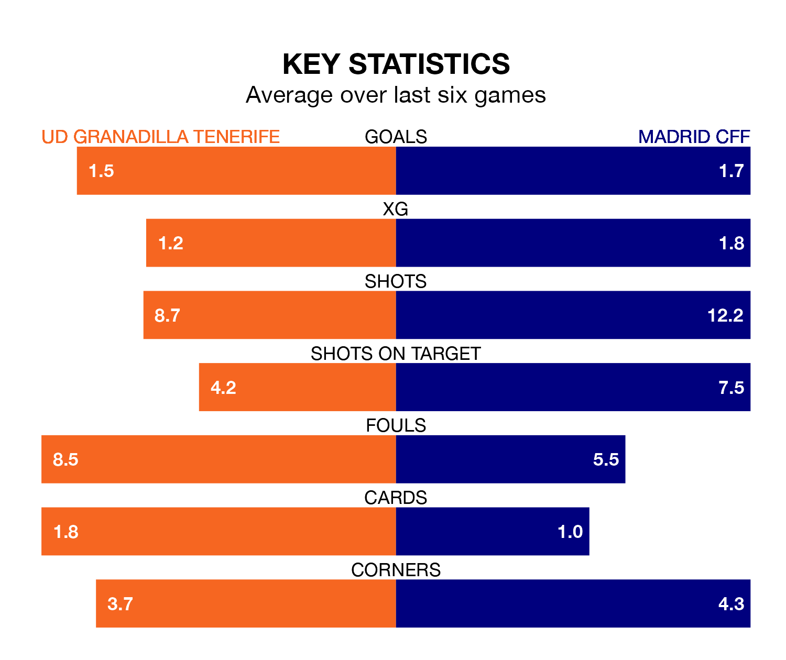

UD Granadilla Tenerife host Madrid CFF on Sunday at the Estadio La Palmera in Liga F.
In their last league match, on March 31, Granadilla Tenerife beat Sporting de Huelva 2-1 away, with goals from Agustina Barroso Basualdo and Gift Monday.
Madrid CFF lost, 3-0 away at Granada Women.
With 49 goals in 22 games so far this season, Madrid CFF are the league's third-highest scorers with 2.2 goals per game. And they are conceding at an average rate, letting in 35 goals at a rate of 1.6 per game.
Granadilla Tenerife, meanwhile, are below average scorers, with 1.3 goals per game, compared to a league average of 1.6. They have conceded 1.6 goals per game.
In the last 10 years, Granadilla Tenerife and Madrid CFF have played each other on 13 occasions. Granadilla Tenerife won seven of them, Madrid CFF five, and they drew once.
On average, Granadilla Tenerife scored 2.0 goals and Madrid CFF 1.5 in those matches.
Their last meeting was on October 22, when Madrid CFF won 3-2 at home.
The visitors are fifth in the table after 22 games, of which they have won 13 and drawn three, earning 42 points.
The home team are four places behind Madrid CFF in ninth, with seven wins and six draws putting them on 27 points.
Granadilla Tenerife's Rinsola Babajide is among the league's most creative players, racking up seven assists in 22 appearances so far this season, and holding third spot in Liga F's assist charts.
For Madrid CFF, Karen Araya has set up the most goals, having laid on seven assists in 22 games.
Granadilla Tenerife are in mixed form in Liga F, with two wins and a draw from their last six games.
With three wins and a draw over that period, the away side's form is better – they have taken 10 points from 18, compared to the hosts' seven.
Updated: 10:01 (UTC), 12/04/24